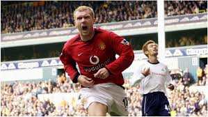
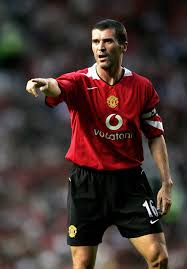

The history of Manchester United is woven from the brilliance of its greatest players. While the legacy of Sir Matt Busby's Babes and the Holy Trinity endures, the modern identity of the club has been shaped by a succession of iconic figures from the Premier League era onward. These are the individuals whose talent, character, and trophy-laden careers forged the United of today.
Often credited with igniting the club's sustained success in the early Premier League years, Eric Cantona was more than a player; he was a phenomenon. Arriving in 1992, his charismatic presence, technical arrogance, and clutch goals provided the final, missing piece. He inspired a generation of teammates, won four league titles in five years, and embodied the winning mentality that would become the United standard.

The club's record appearance holder and one of the most decorated players in English football history, Ryan Giggs is Manchester United. Spending his entire 24-year career at Old Trafford, his evolution from flying winger to cerebral central midfielder showcased a remarkable football intelligence. With 13 Premier League titles and two Champions League triumphs, his longevity and consistency are unparalleled.

A world-class midfielder known for his peerless passing range, technical ability, and thunderous striking of the ball, Paul Scholes was the silent engine of United's dominance. A key member of multiple successful teams, his vision dictated the tempo of games. Revered by teammates and rivals alike, his retirement left a void that the club has long struggled to fill.
The epitome of fierce determination and leadership, Roy Keane was a dominant and inspirational captain who was the heart of the midfield during a period of immense success. His relentless will to win set the tone for the entire team. The driving force behind the historic 1999 Treble campaign, his performances in big games were legendary for their sheer force of personality.
Famous for his pinpoint crossing, bending free-kicks, and unprecedented global stardom, David Beckham was a product of the club's famed "Class of '92". His right foot delivered countless assists and iconic moments, from the halfway-line goal to crucial set-pieces. While his off-field fame skyrocketed, his work ethic and delivery on the pitch were fundamental to United's late-90s triumphs.

Evolving from a tricky winger into one of the world's most devastating forwards during his first spell, Cristiano Ronaldo reached stratospheric heights at United. Winning his first Ballon d'Or in 2008, his 42-goal season propelled the club to a Premier League and Champions League double. His time at United laid the foundation for his claim to be among the greatest of all time.

The club's all-time top goalscorer and a powerhouse of a forward, Wayne Rooney was the embodiment of on-pitch passion for over a decade. Combining incredible work rate with explosive finishing and creativity, he was the team's talisman. As captain in his later years, he led by example, leaving with every major honour and a legacy of memorable, often thunderous, goals.
1992 Youth Cup Final Team Included: Gary Neville, Nicky Butt, David Beckham, Ryan Giggs (though he had already broken into the first team), Paul Scholes (on the bench), Robbie Savage, Keith Gillespie, and others.

Arguably the most formidable central defensive partnership in Premier League history, Ferdinand and Vidić formed the unshakeable backbone of United's most successful sides under Sir Alex Ferguson. Ferdinand's elegant grace and reading of the game perfectly complemented Vidić's uncompromising bravery and aerial dominance. Together, they provided the platform for years of silverware.

Two goalkeepers who defined different eras with world-class consistency. Peter Schmeichel, "The Great Dane," was a colossus whose presence and match-winning saves were integral to the Treble season. Decades later, David de Gea inherited the mantle, claiming the club's Player of the Year award a record four times with his incredible shot-stopping, often single-handedly rescuing points for the team.

In the post-Ferguson era, new figures have carried the icon mantle. Bruno Fernandes, the current club captain, has made a seismic impact since his arrival. As the team's creative heartbeat, his relentless mentality, chance creation, and goal output have made him the undisputed leader and a symbol of the modern era, despite less team success. Marcus Rashford, the local academy graduate, has blossomed into a senior figure with over 400 appearances. Beyond his electrifying pace and goals, his remarkable social campaigning and deep connection with the club and city have cemented his status as a homegrown icon for a new generation.

These players, across different decades, have shared the common thread of defining Manchester United at key points in its modern history. Their skill, silverware, and unforgettable moments have collectively written the story of the Red Devils.